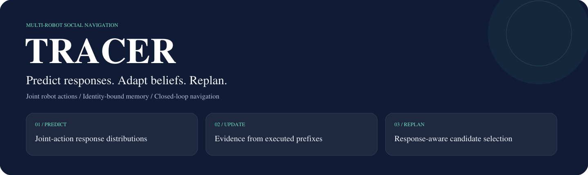
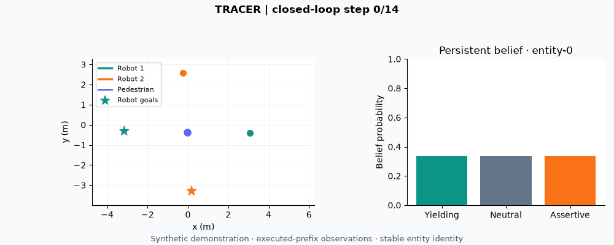

Multi-robot social navigation
TRACER: Adaptive Multi-Robot Social Navigation via Joint Human-Response Prediction and Interaction-Aware Replanning

Overview
TRACER predicts how people respond to joint robot actions, executes a short plan, and updates persistent beliefs from the observed response before replanning.
- Predict joint-action responses: individual-robot effects and non-additive pairwise interactions.
- Remember interactions: identity-bound beliefs updated from executed-prefix observations.
- Replan online: response-aware candidate evaluation and synchronized execution.
Method

Demo
The CPU example trains a small response model on generated data, then runs seven decision windows with persistent belief updates. Runs on CPU with no dataset.

python -m tracer.demo --output outputs/demoResults
| Setting | Reported result |
|---|---|
| Controlled joint-action response | Pair-effect RMSE decreases 23.94% relative to the capacity-matched additive predictor |
| Identity and memory | Persistent beliefs evaluated under ID/OOD identity and memory ablations |
| SocialGym2 navigation | Collision-free completion rises from 22.5% to 31.6% against GoAlone over 320 paired episodes |
The SocialGym2 comparison is against GoAlone; it does not establish that every component ablation is worse. See the result index for 14 retained CSVs and their evidence boundaries.
Quick start
git clone https://github.com/Larryhul/TRACER.git
cd TRACER
python -m pip install -e ".[dev]"
python -m tracer.demo --output outputs/demoBibTeX
@misc{tracer_manuscript,
title = {TRACER: Adaptive Multi-Robot Social Navigation via Joint Human-Response Prediction and Interaction-Aware Replanning},
author = {Hu, Lan and Liwang, Minghui and Zhu, Wenbo and Yi, Xinlei and Gong, Wei and Hong, Yiguang and Hosseinalipour, Seyyedali},
year = {2026},
eprint = {2609.18776},
archivePrefix = {arXiv},
primaryClass = {cs.RO},
url = {https://arxiv.org/abs/2609.18776}
}